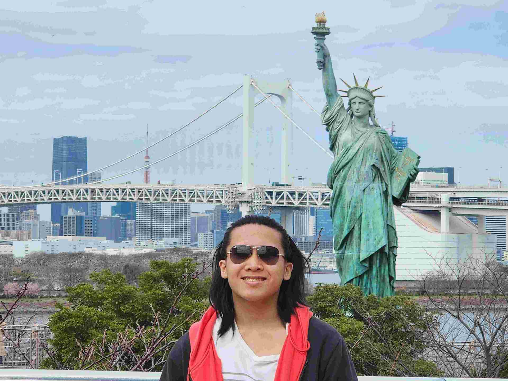

Score: 0
Wen Wei's Japan Travels
日本語を分かりますか？
About this site
I am an avid Japan enjoyer who wants to share more about my experiences and some top places to go to!
In this site, I will share with you some of the places I went, and also some tips for Japan!
